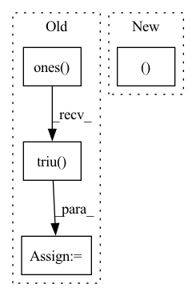

Pattern ID :27582

Before Change
if causal:
i, j = q.shape[-2], k.shape[-2]
causal_mask = torch.ones(i, j, device = q.device, dtype = torch.bool).triu(j - i + 1)
causal_mask_chunks = causal_mask.split(q_bucket_size, dim = 0)
causal_mask_chunks = list(map(lambda t: t.split(k_bucket_size, dim = -1), causal_mask_chunks))
if exists(attn_bias):
After Change
mask_chunk,
attn_bias_chunk,
causal,
(q_start_index, k_start_index)
)
exp_weights.append(exp_weight_chunk)
In pattern: SUPERPATTERN
Frequency: 3
Non-data size: 4
Instances
Fragment ID: 81930246
Project Name: lucidrains/memory-efficient-attention-pytorch
Commit Name: 4be82443e060be7224be5e8247c097fcc84aa72d
Time: 2022-03-20
Author: lucidrains@gmail.com
File Name: memory_efficient_attention_pytorch/memory_efficient_attention.py
M Class Name: AnonimousClass
N Class Name: AnonimousClass
M Method Name: memory_efficient_attention(9)
N Method Name: memory_efficient_attention(9)
M Parent Class:
N Parent Class:
M File Name: memory_efficient_attention_pytorch/memory_efficient_attention.py
N File Name: memory_efficient_attention_pytorch/memory_efficient_attention.py
M Start Line: 87
M End Line: 136
N Start Line: 114
N End Line: 136
'>
Before Change
tensor = ori_tensor.permute(0, 3, 1, 2).contiguous()
uppder_ones = (
torch.ones([tensor.size()[-1], tensor.size()[-1]])
.long()
.triu()
.to(ori_tensor.device)
)
upper_diag_ids = torch.nonzero(uppder_ones.view(-1), as_tuple=False).view(-1)
// flat_tensor: (batch_size, matrix_size * matrix_size, hidden_size)
flat_tensor = tensor.view(tensor.size(0), tensor.size(1), -1).permute(0, 2, 1)
tensor_upper = torch.index_select(flat_tensor, dim=1, index=upper_diag_ids)
After Change
:param tensor: (batch_size, matrix_size, matrix_size, hidden_size)
:return: (batch_size, matrix_size + ... + 1, hidden_size)
bs, matrix_size, matrix_size, hidden_size = tensor.shape
mask = torch.ones(matrix_size, matrix_size, device=tensor.device).triu().bool()[
None, :, :, None]
return tensor.masked_select(mask).reshape(bs, -1, hidden_size)
'>
Fragment ID: 81930244
Project Name: junnyu/gplinker_pytorch
Commit Name: 646f478a00ca38cb2975716cba55ca2aee83b980
Time: 2022-02-28
Author: 573009727@qq.com
File Name: utils/components.py
M Class Name: HandshakingKernel
N Class Name: HandshakingKernel
M Method Name: upper_reg2seq(2)
N Method Name: upper_reg2seq(2)
M Parent Class: nn.Module
N Parent Class: nn.Module
M File Name: utils/components.py
N File Name: utils/components.py
M Start Line: 247
M End Line: 258
N Start Line: 247
N End Line: 250
'>
Before Change
if causal:
i, j = q.shape[-2], k.shape[-2]
causal_mask = torch.ones(i, j, device = q.device, dtype = torch.bool).triu(j - i + 1)
causal_mask_chunks = causal_mask.split(q_bucket_size, dim = 0)
causal_mask_chunks = list(map(lambda t: t.split(k_bucket_size, dim = -1), causal_mask_chunks))
if exists(attn_bias):
i, j = attn_bias.shape[-2:]
After Change
mask_chunk,
attn_bias_chunk,
causal,
(q_start_index, k_start_index)
)
exp_weights.append(exp_weight_chunk)
'>
Fragment ID: 81930250
Project Name: lucidrains/memory-efficient-attention-pytorch
Commit Name: 4be82443e060be7224be5e8247c097fcc84aa72d
Time: 2022-03-20
Author: lucidrains@gmail.com
File Name: memory_efficient_attention_pytorch/memory_efficient_cosine_sim_attention.py
M Class Name: AnonimousClass
N Class Name: AnonimousClass
M Method Name: numerically_unstable_memory_efficient_attention(9)
N Method Name: numerically_unstable_memory_efficient_attention(9)
M Parent Class:
N Parent Class:
M File Name: memory_efficient_attention_pytorch/memory_efficient_cosine_sim_attention.py
N File Name: memory_efficient_attention_pytorch/memory_efficient_cosine_sim_attention.py
M Start Line: 94
M End Line: 128
N Start Line: 107
N End Line: 128